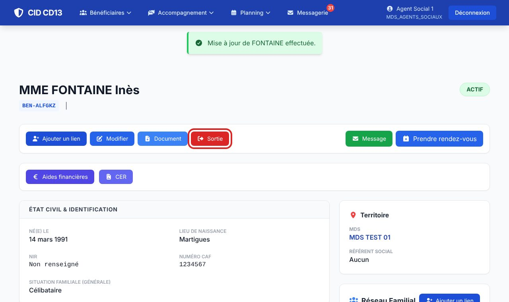
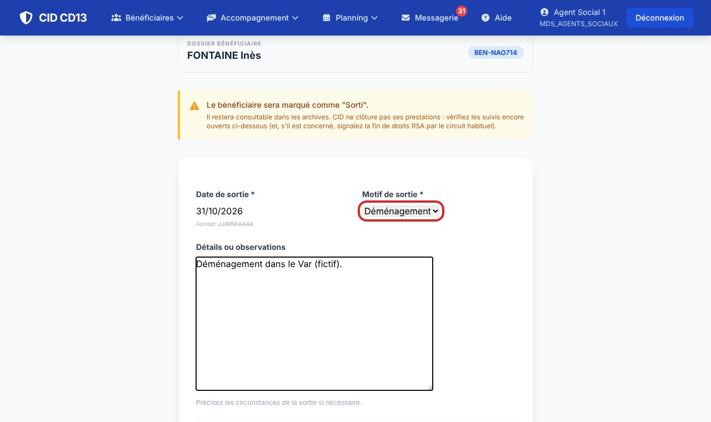
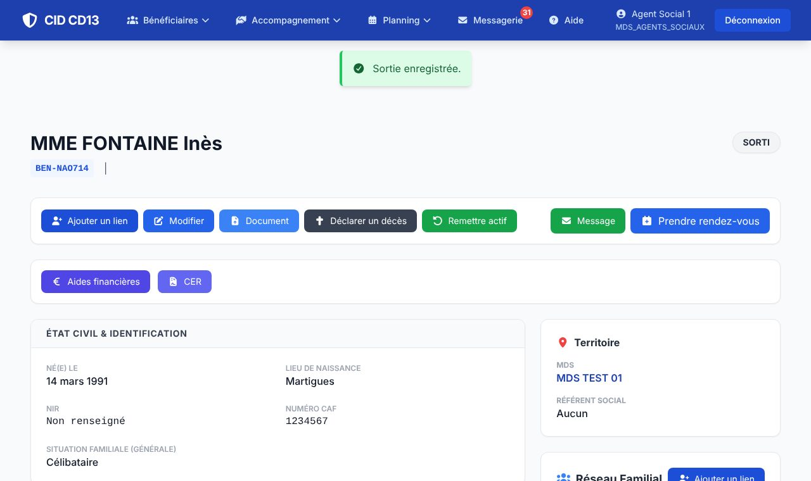
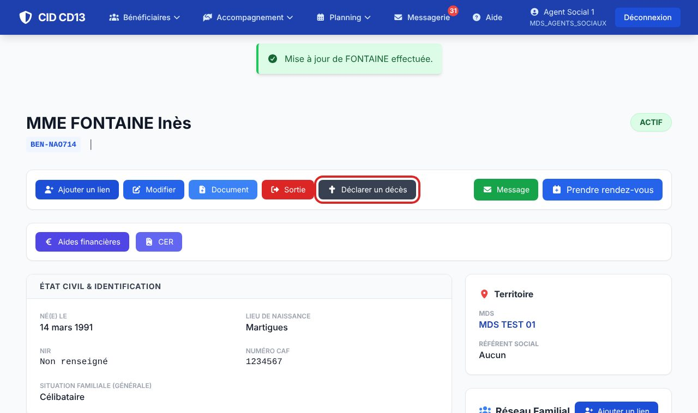
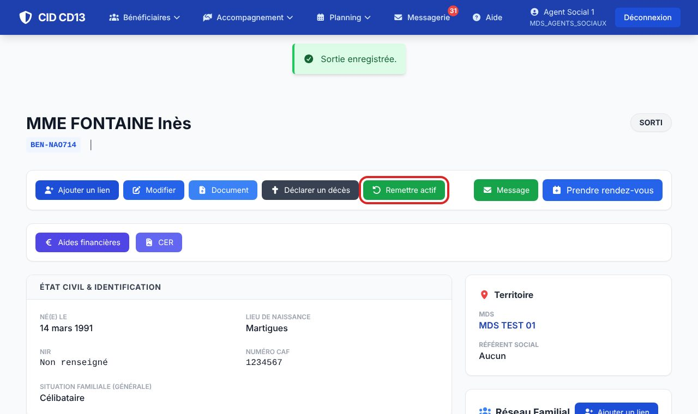
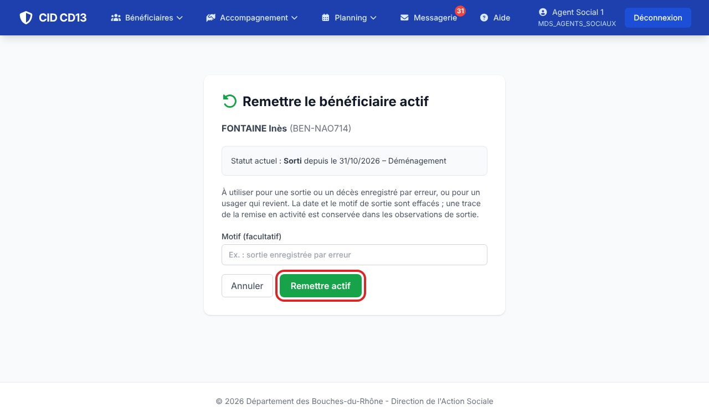

Avant de commencer
- Ouvrez la fiche du bénéficiaire (Chercher un bénéficiaire).
- Un usager qui déménage dans le département ne sort pas : la nouvelle MDS le transfère.
1Ouvrir la sortie

- Sur la fiche, cliquez sur le bouton rouge Sortie.
2Indiquer la date et le motif

- Si des suivis sont encore ouverts (aide en cours, rendez-vous à venir, IP), un encadré orange les liste : la sortie ne les annule pas, prévenez les collègues ou traitez-les avant.
- Saisissez la date de sortie (31/10/2026 ou 311026).
- Choisissez le motif : séparation, divorce, décès, déménagement, placement, majorité, fin de droits.
- Précisez les circonstances dans Détails ou observations si nécessaire.
- Cliquez sur Confirmer la fin de prise en charge.
CID ne clôture pas les prestations : s'il est concerné, signalez la fin de droits RSA par le circuit habituel.
3Vérifier

- Un message confirme la sortie ; le bénéficiaire passe au statut Sorti (ou Décédé si le motif est le décès).
- Sa fiche reste consultable : elle n'est pas supprimée.
4Déclarer un décès

- Sur la fiche, cliquez sur Déclarer un décès.
- Saisissez la date du décès et, si besoin, une observation, puis validez : le statut passe à Décédé.
5Remettre actif (erreur ou retour de l'usager)


- Sur la fiche d'un usager sorti ou déclaré décédé, cliquez sur Remettre actif.
- Indiquez le motif si vous le souhaitez (par exemple « sortie enregistrée par erreur »), puis confirmez.
- La date et le motif de sortie sont effacés ; une trace de la remise en activité est gardée dans les observations.
Bon à savoir
- Une personne sortie n'apparaît plus dans le réseau familial des autres membres du foyer.
- Les observations de sortie s'ajoutent les unes aux autres : rien n'est effacé.
Et ensuite ?
Cliquez sur une image pour l'agrandir. Le cadre rouge montre où cliquer ou quoi remplir. Toutes les données affichées sont fictives.